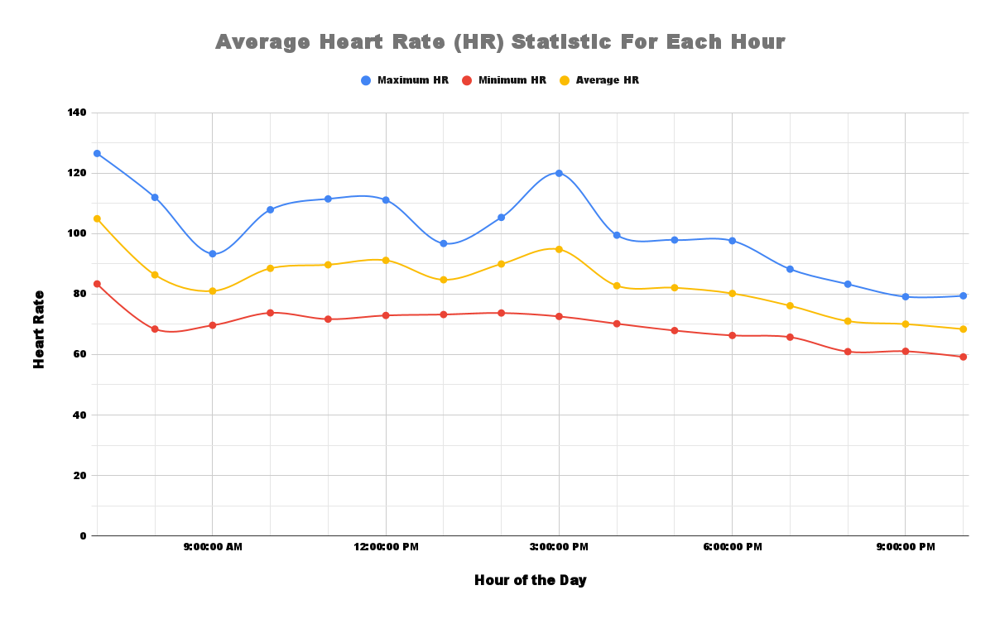

Adam Graneto's final project for Biology 103: Human Anatomy, Physiology, Disease, and Health.
This objective is "Biology Skills" which is about performing research about how biology relates to different organisms and environments.
My first piece of work is my media piece about the steps involved in an experimental design with an example, which shows my mastery of the course objective because it demonstrates my ability to design an experiment related to biology concepts with the intent of performing research.
Research question: Does drinking caffeinated beverages, such as coffee or Pepsi, increase by heart rate during the hour of consumption?
Variables being tested:
Hypothesis: Drinking a caffeinated beverage will increase my heart rate during the first hour of consumption
Experimental Procedure:
My second piece of work is my body visualization media piece, which shows my mastery of the course objective because it demonstrates that I am able to gather and interpret data related to biology in a way that allows me conduct a research experiment.
Line Chart showing my average heart rate, average maximum heart rate, and average minimum heart rate for each hour of the day from 7AM to 10PM: 
Here is the google sheet spreadsheet I used to record the data and create the graph, which includes a lot more data and visualizations that I did not include in my media piece.